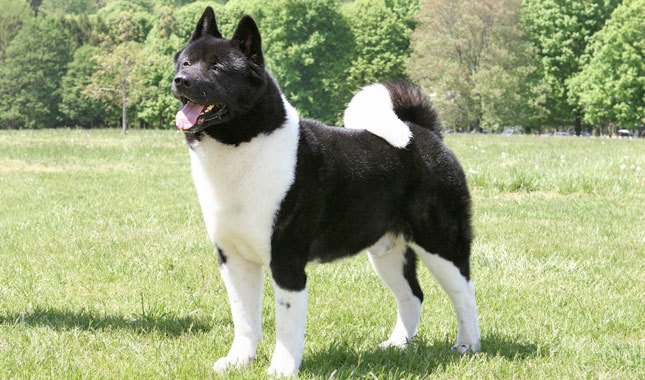

- Jindo
- Akita
- German Shepherd
Akita
They were originally used for guarding royalty and nobility in feudal Japan.
These dogs also tracked and hunted wild boar, black bear, and sometimes deer.
The Akita does not back down from challenges and does not frighten easily
